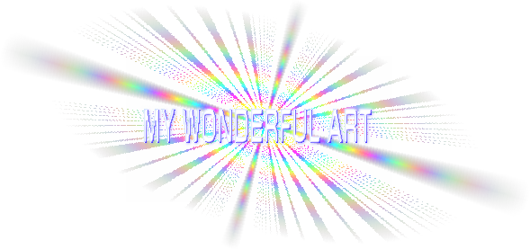
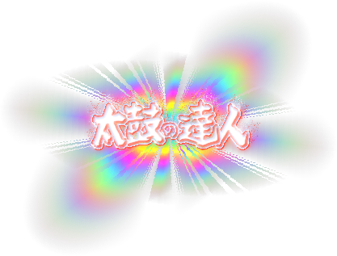
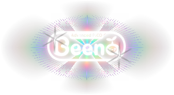
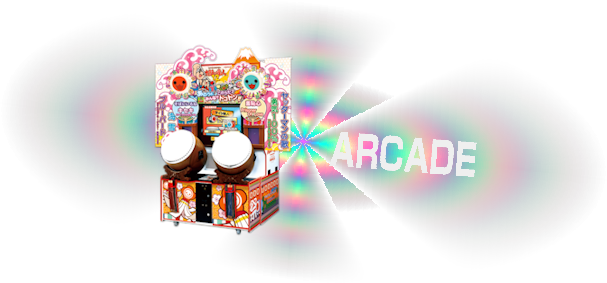
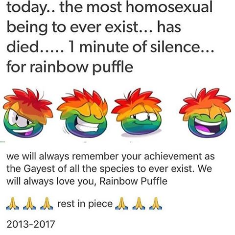
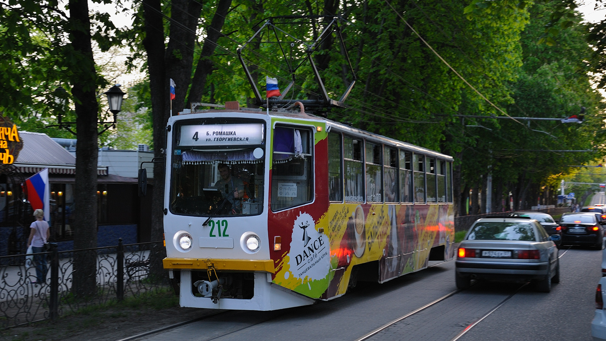
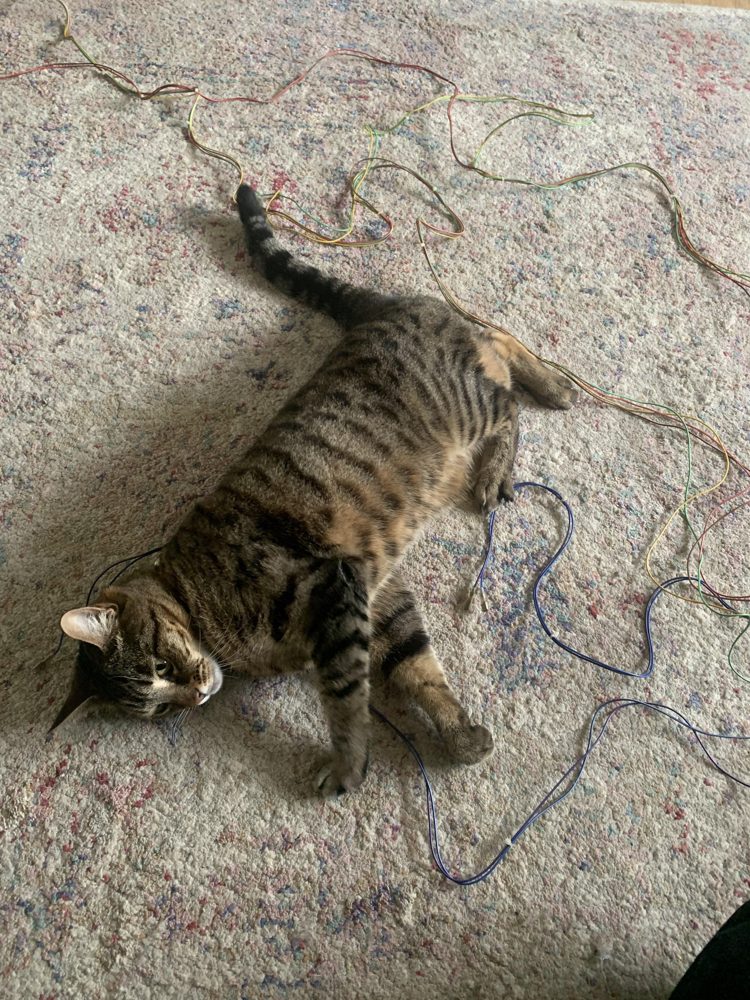

me name
TAIKOFAN
and i like MANY things. you could even say straight up AUTISTIC about many things... "What thing s? " i hear you all asking in unison. well... Let's just say... here are some things abut me, what i'm interested in and ET CETERA
☆ i love the RHYTHM games! taiko and pop'n are my favs
(i'm Building a taiko cabinet...)
☆ calligraphy and ART
☆
languages
- learning russian, german, nanai (and japanese on and off)
☆ love Love LOVE minority languages (especially palaeo-siberian + ryukyuan ones)
☆ i'm also a raging they/them Furry homosexual
☆
万
まん
葉
よう
仮
が
名
な
変
へん
体
たい
仮
が
名
な
草
cǎo
書
shū
篆
zhuàn
書
shū
行
xíng
書
shū
☆ almighty
sheena Ringo
japanese singer/songwriter and her band tokyo jihen
☆ zemfira Music Artist
☆
cloŋiŋ
and worldbuilding
☆ old game consoles (
sega pico beena
)
☆ public transport
☆
road signs and license plates
☆ 2nd level subdivisions of russia
☆ eurovision
☆ geology
there are probably more awesome yet subtly interesting facts that I've
forgotten but these are the ones that come to mind :3
cyrpus road Sign
china road Sign
icelandic road SIGN
Arcade Cabinet Project Actually
Flash site taiko ac 11-14
donder page PDFs
shiin aringo
cloŋ
artwork's



D
ka
F
don
J
don
D
ka